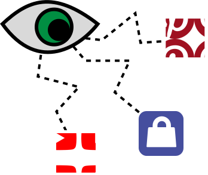
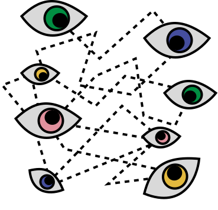

Nearly every app on your phone collects information about you.
This can include:
All this information is kept and stored in a profile that online advertisers or web services make about you.
They connect and compare information with each other to create a more comprehensive profile based on your activities all over the web.
Say you download a shopping app on your phone and create an account on it with your email.
There are specific tracking domains connected to that app that collect information about what you're doing on it.
This can include behavioral information, such as what types of clothing you're looking at most, what times of day you're doing the most shopping, or how likely you are to buy certain items.
These trackers can also collect more sensitive types of data from you, such as your location, financial information, gender, and email address.
Now say you go onto Pinterest. The same tracking domains may be connected to Pinterest as well, and can identify you through your IP address, device information, and email address.
They can use the information that they learned about you from the shopping app to show you more specific ads on Pinterest; maybe for stores that they know are near your location and that they know you are more likely to buy from.
They also can collect more information about you based on your Pinterest activities and what you choose to click on and look at.
Some of these tracking domains might also be connected to the YouTube app. They can learn even more information about you based on the types of videos you choose to watch and the channels you interact with.
If you own and use a smartphone, it is safe to say that this is probably happening to you in some form. Google, Meta, and Apple (and other companies!) all have massive tracking networks that gather information about you all over the web.
By analyzing and cross-referencing this data, app tackers can build a detailed profile of your interests, habits, and behavior.
This profile can then be used for a variety of purposes, such as serving you targeted advertisements or selling your data to third party partners.